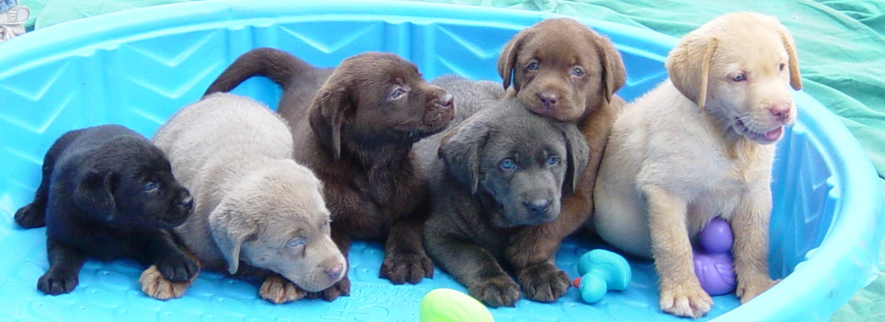

De labrador retriever of kortweg labrador is een hondenras dat afstamt van de St. John's-hond.
Dat ras is vanaf midden 19e eeuw in Engeland gekruist met een aantal andere rassen, zoals de gordon
setter, de spaniël, de flatcoated retriever en de Chesapeake Bayretriever.
De St. Johns-hond werd in Newfoundland gebruikt voor de visvangst, de labrador werd in Engeland speciaal
gefokt voor de eendenjacht in moerassige gebieden. De retriever heeft zelfs zwemvliezen tussen zijn tenen.
Er zijn 2 soorten labradors, nl. de Engelse labrador (of de showlijn) en de Amerikaanse labrador (of de werklijn).
Kenmerken van de labrador
Ze hebben verschillende kleuren
Officieel:
Zwart
Blond (van wit tot red fox)
Bruin
Onofficieel:
Charcoal
Zilver

Hun vacht is kort en dik met een waterafstotende ondervacht.
Labradors hebben zwemvliezen tussen hun tenen waardoor ze fantastische zwemmers zijn.
Ze zijn leergierig en intelligent en dus makkelijk te trainen. Daarom wordt het ras ook vaak als service hond ingezet.
Ze eten graag. Dit komt doordat een gen ontbreekt waardoor ze minder goed in staat zijn om de stoffen te produceren die het hongergevoel na een maaltijd stillen.